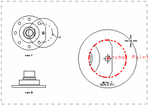
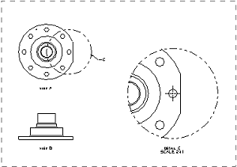

Enlarge the boundary of the detail view. (Do not worry about any resulting overlap.)
|
Tip |
You may have to delete extra centerline symbols. |

The detail view should show the holes above and below the center hole.

Move the detail view into the upper right hand corner of the drawing sheet to make room for the next view.